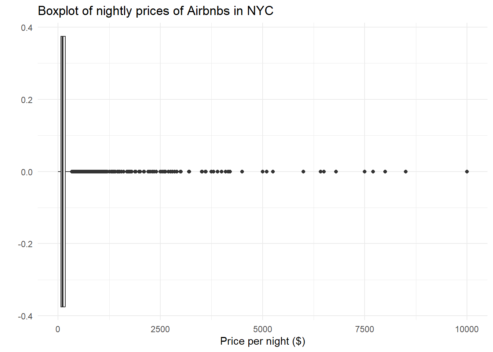
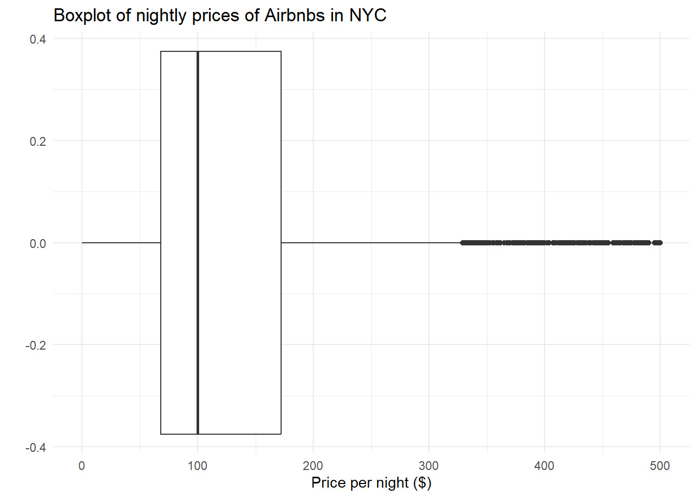
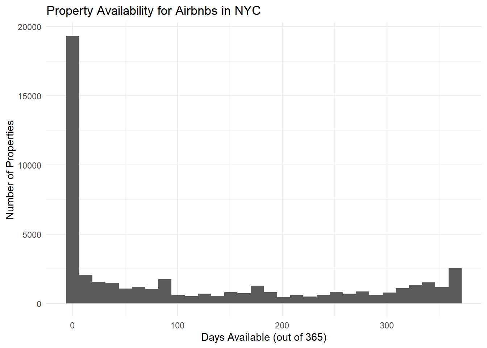
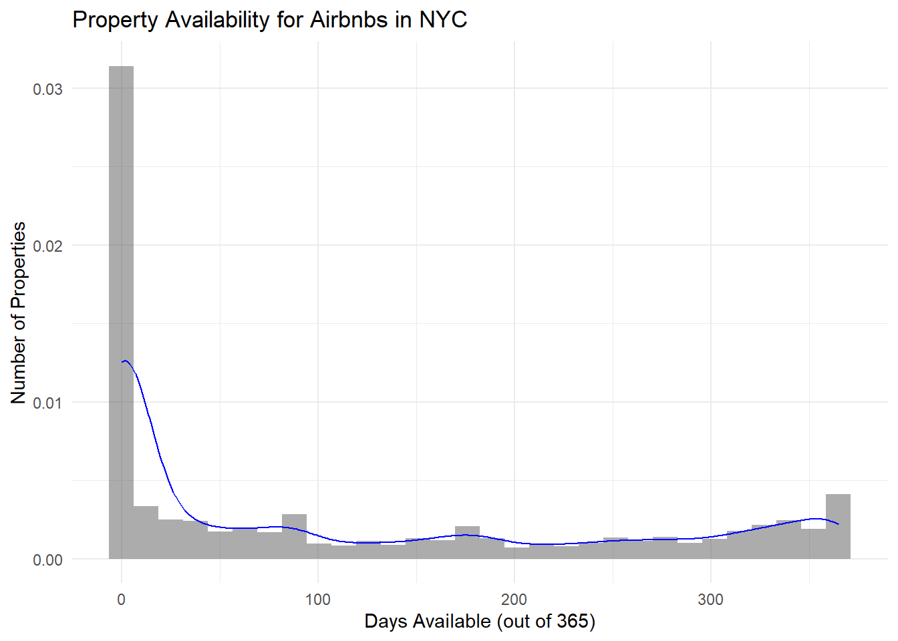
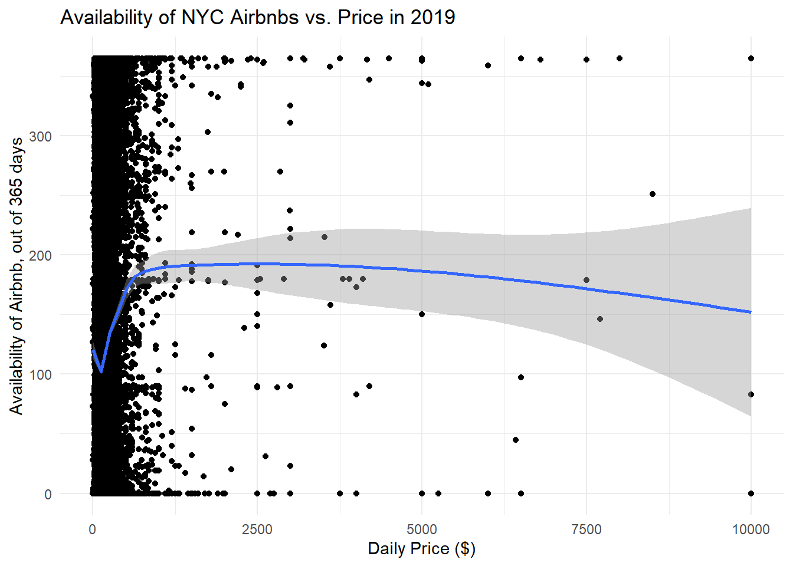
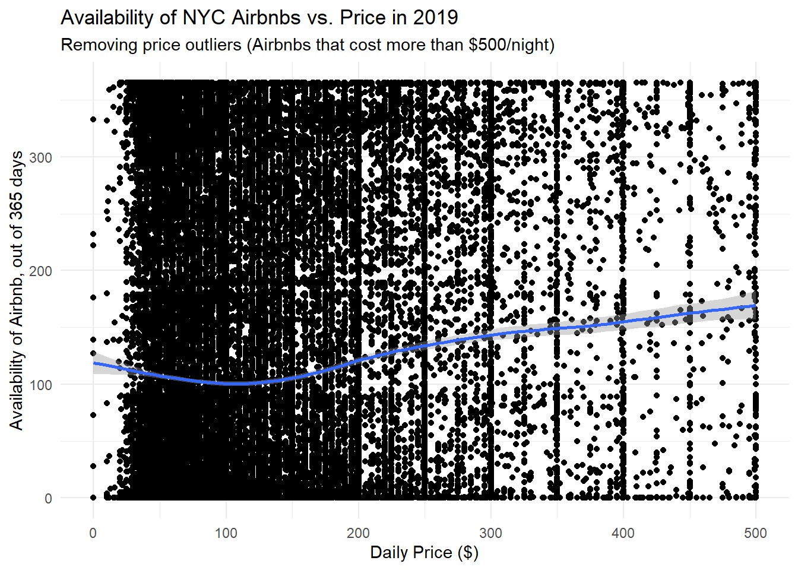

library(tidyverse)
library(ggplot2)
library(here)
knitr::opts_chunk$set(echo = TRUE, warning=FALSE, message=FALSE)Challenge 5 Solution - Airbnb Prices in NYC
challenge_5
air_bnb
Linus Jen
Introduction to Visualization
Read in data
For this challenge, we’ll be investigating the AB_NYC_2019.csv dataset.
data <- read_csv(here("posts", "_data", "AB_NYC_2019.csv"))
# View data
head(data)glimpse(data)Rows: 48,895
Columns: 16
$ id <dbl> 2539, 2595, 3647, 3831, 5022, 5099, 512…
$ name <chr> "Clean & quiet apt home by the park", "…
$ host_id <dbl> 2787, 2845, 4632, 4869, 7192, 7322, 735…
$ host_name <chr> "John", "Jennifer", "Elisabeth", "LisaR…
$ neighbourhood_group <chr> "Brooklyn", "Manhattan", "Manhattan", "…
$ neighbourhood <chr> "Kensington", "Midtown", "Harlem", "Cli…
$ latitude <dbl> 40.64749, 40.75362, 40.80902, 40.68514,…
$ longitude <dbl> -73.97237, -73.98377, -73.94190, -73.95…
$ room_type <chr> "Private room", "Entire home/apt", "Pri…
$ price <dbl> 149, 225, 150, 89, 80, 200, 60, 79, 79,…
$ minimum_nights <dbl> 1, 1, 3, 1, 10, 3, 45, 2, 2, 1, 5, 2, 4…
$ number_of_reviews <dbl> 9, 45, 0, 270, 9, 74, 49, 430, 118, 160…
$ last_review <date> 2018-10-19, 2019-05-21, NA, 2019-07-05…
$ reviews_per_month <dbl> 0.21, 0.38, NA, 4.64, 0.10, 0.59, 0.40,…
$ calculated_host_listings_count <dbl> 6, 2, 1, 1, 1, 1, 1, 1, 1, 4, 1, 1, 3, …
$ availability_365 <dbl> 365, 355, 365, 194, 0, 129, 0, 220, 0, …# Check NAs
data %>% summarise(across(everything(), ~sum(is.na(.))))# Interesting that there are lots of missing data, let's check how many units have no reviews
data %>% filter(number_of_reviews == 0) %>% nrow()[1] 10052Briefly describe the data
Our data seems to already be tidy! Each row represents an Airbnb location, as every location has its own id. Other columns include the place’s name, the host_id for the host of the location, the neighborhood_group and neighborhood the place is located in NYC, the latitude and longitude for the Airbnb, the room_type of the Airbnb, price and minimum_nights that describe the specifics for booking the location, date of last_review, approximate reviews_per_month, the calculated_host_listings_count, and availability_365 for the Airbnb for the year. There are 48,895 rows and 16 columns. From the title, this data contains information about Airbnbs in NYC for the 2019 year.
While there are some missing data (such as the name, host_name, last_review, and reviews_per_month). It’s interesting though that the review related columns are both missing 10,052 rows, or 20.26% of all observations. This is probably because these units have never been rented out or are new, so customers have not left any reviews yet. My suspicions are supported because 10,052 rows have number_of_reviews as 0.
# Only column that needs "fixing" is the `room_type`
unique(data$room_type)[1] "Private room" "Entire home/apt" "Shared room" # 3 unique values, convert to factors
data$room_type <- factor(data$room_type)The data came already mostly cleaned, with the right data types. The only change we made was to convert the room_types to be factors rather than strings.
Univariate Visualizations
I’ll create 2 univariate visualizations. They will cover price and availability_365.
Airbnb Prices
# Summary of
summary(data$price) Min. 1st Qu. Median Mean 3rd Qu. Max.
0.0 69.0 106.0 152.7 175.0 10000.0 # Notice how most of the prices are under $175, with clear outliers at $10,000/night
# Boxplot
ggplot(data) +
geom_boxplot(aes(x = price)) +
labs(title="Boxplot of nightly prices of Airbnbs in NYC", x="Price per night ($)", y="") +
theme_minimal()
# Boxplot with limits
ggplot(data) +
geom_boxplot(aes(x = price)) +
xlim(0, 500) +
labs(title="Boxplot of nightly prices of Airbnbs in NYC", x="Price per night ($)", y="") +
theme_minimal()
The distribution of nightly Airbnb prices is clearly skewed right, as the mean is greater than the median, and there are many large outliers for the price per night of each Airbnb in NYC. I chose to use a boxplot instead of a histogram / density plot because I used those plots in the following section. To reduce the scaling of the graphs, I limited the x-axis to be a maximum of 500.
Airbnb Property Availabilites
summary(data$availability_365) Min. 1st Qu. Median Mean 3rd Qu. Max.
0.0 0.0 45.0 112.8 227.0 365.0 # Histogram
par(mfrow=c(1, 2))
ggplot(data) +
geom_histogram(aes(availability_365)) +
labs(title="Property Availability for Airbnbs in NYC", x="Days Available (out of 365)", y="Number of Properties") +
theme_minimal()
# Density plot
ggplot(data, aes(availability_365)) +
geom_histogram(aes(y = ..density..), alpha=0.5) +
geom_density(color="blue") +
labs(title="Property Availability for Airbnbs in NYC", x="Days Available (out of 365)", y="Number of Properties") +
theme_minimal()
In the plots above, we see that a majority of Airbnbs had availabilities for less than 20 days, which makes sense given popular NYC is as a tourist destination. However, it’s shocking to see that the number and proportion of Airbnbs that were available without anyone staying there after 200 days is quite large, and this proportion greatly increases after 300 days. Again, this distribution is clearly skewed right. I chose to use a histogram / density plot because it’s a quick and easy way to visualize the distribution of days available for the Airbnbs in NYC. This dataset is also clearly skewed right, as a majority of the values are < 100 for the availability.
Bivariate Visualization(s)
For the bivariate section, it might be interesting to see how the number of available nights relate back to the cost per night - specifically, does the price of an Airbnb show any correlation with how many nights it’s available (IE not filled)?
# Plot availability vs. price without any filters
ggplot(data, aes(x=price, y=availability_365)) +
geom_point() +
geom_smooth() +
theme_minimal() +
labs(title="Availability of NYC Airbnbs vs. Price in 2019", x="Daily Price ($)", y="Availability of Airbnb, out of 365 days")
# Remove where prices > 500
data %>% filter(price <= 500) %>%
ggplot(data=., aes(x=price, y=availability_365)) +
geom_point() +
geom_smooth() +
labs(title="Availability of NYC Airbnbs vs. Price in 2019", x="Daily Price ($)", y="Availability of Airbnb, out of 365 days", subtitle="Removing price outliers (Airbnbs that cost more than $500/night)") +
theme_minimal()
From the two plots above, it doesn’t seem like there is any relationship between price and availability of an Airbnb. The first graph shows the full dataset without any an filtering of outliers, while the second graph removes prices where the nightly price was greater than $500. The line is mostly horizontal, and was created using a generalized additive model (gam).